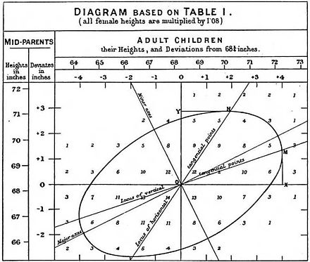
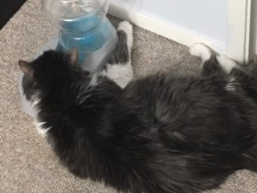

The Ugly History of Linear Regression
Lab 2
Revisions Due Tonight
If you submitted revisions and your grade is still “Incomplete” – either you forgot to submit reflections or you are being asked to complete a second round of revisions.
Lab 3
A Grading Reminder
“Complete” = Satisfactory
Your group obtained a “Success” on every question
“Incomplete” = Growing
Your group received a “Growing” on at least one question
Common Mistakes
- Categorical variables in R (Q2)
- What data types does R use to store categorical variables? Integers? Characters? Doubles? Factors? Dates?
- Comparing distributions between groups (Q9)
- Were
- Comparing group means with distributions (Q11)
- Where did you believe the “center” of the distribution was?
- Is that different from the means you are seeing? Why do you think that is?
Copying the Lab – Last Week’s Recorder
The person who typed your lab needs to make their project “public”
- Open Posit Cloud
- Go to the STAT 313 / 513 workspace
- Click on “Your Content”
- Open the settings for your Lab 1 project

Copying the Lab – Last Week’s Recorder
- Change the access for your project to “Space Members”

Copying the Lab – Everyone Else
- Find your group member’s lab (you can use the search bar to search for their name)

- Open their Lab 2 project
- Select “Save a Permanent Copy”

Completing Revisions
Lab 2 revisions are due by Thursday, February 1.
- Read comments on Canvas
- Copy your group’s lab assignment
- Complete your revisions
- Render your revised Lab 2
- Download your revised HTML
- Submit your revisions to the Lab 2 Revisions assignment
Reflections
Revisions are required to be accompanied with reflections on what you learned while completing your revisions. These can be written in your Lab 1 Quarto file (next to the problems you revised), in a Word document, in the comment box on Canvas.
Least Squares
Published in 1805 by Legendre

and Gauss in 1809

Used to determine, from astronomical observations, the orbits of bodies about the Sun.
“regression”

Coined by Francis Galton in the 19th century
Described a biological phenomenon
- Heights of children of tall parents tend to be tall, but shorter than their parents
A “polymath”

In Statistics, Galton (1822–1911) is a towering figure.
He invented standard deviation, correlation, linear regression, ANOVA
Galton’s developments and discoveries were fueled in large part by his fascination with the science of heredity.
The Invention of Eugenics
The science of heredity could help humanity better itself through breeding.
Based on Greek eugenes, meaning “well-born”
Galton served as founding president of the British Eugenics Society
“What nature does blindly, slowly and ruthlessly, man may do providently, quickly, and kindly. As it lies within his power, so it becomes his duty to work in that direction.”
Eugenics and the US
In 1896 Connecticut made it illegal for people with epilepsy or who were “feeble-minded” to marry.
John Kellogg established a “pedigree registry”
From 1909 to 1979 California sterilized nearly 20,000 residents of the state mental institutions
In 1927 the US Supreme Court ruled that sterilization of the handicapped did not violate the Constitution — “…three generations of imbeciles are enough.”
Between 1970 and 1976 between 25 and 50% of Native Americans were sterilized, many without consent
And then it spread…
Mein Kampf references American eugenics
Declared non-Aryan races inferior
Believed Germans should do everything possible to make sure their gene pool stayed “pure”

Would you exist?
. . .
Is your skin white?
Are you blonde?
Do you have blue eyes?
Were your ancestors poor?
Are you Muslim, Hindu, Buddhist, Sikh, Tao, or Jewish?
Are you LGBTQIQ+?
More Information
- Radiolab Presents: G
- “G” is a multi-episode exploration of one of the most dangerous ideas of the past century: the concept of intelligence.
- https://www.wnycstudios.org
- How Eugenics shaped Statistics
Lab 4
Today’s Data
Data includes lake name, dates of freeze-up and thaw, and duration of ice cover of lakes in the Madison, WI area. Ice cover duration is the number of days that a lake is frozen, excluding periods where the lake thaws before refreezing again. Lakes Monona and Wingra are considered to be frozen if they are completely ice covered, while Lake Mendota is considered to be frozen if there is ice from Picnic Point to Maple Bluff and more than 50% of the lake is covered by ice.

Research Question
Has the duration of ice cover changed over the last 175 years?
Data Layout
| lakeid | ice_on | ice_off | ice_duration | year |
|---|---|---|---|---|
| Lake Mendota | 1874-12-10 | 1875-04-15 | 126 | 1874 |
| Lake Mendota | 2010-12-15 | 2011-04-03 | 110 | 2010 |
| Lake Mendota | 1969-12-16 | 1970-04-08 | 113 | 1969 |
| Lake Mendota | 2003-01-04 | 2003-04-03 | 89 | 2002 |
| Lake Monona | 1876-01-10 | 1876-04-10 | 91 | 1875 |
| Lake Monona | 2019-12-16 | 2020-03-20 | 80 | 2019 |
| Lake Monona | 1973-12-20 | 1974-03-24 | 94 | 1973 |
| Lake Monona | 1906-12-08 | 1907-03-24 | 106 | 1906 |